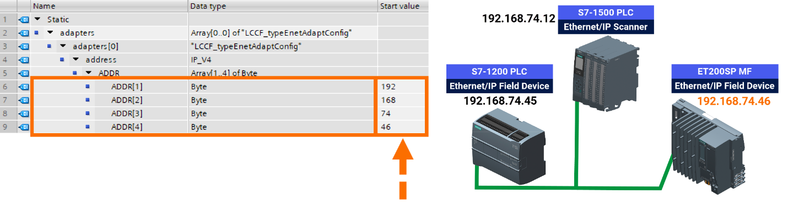

Ethernet/IP
EtherNet/IP (Ethernet Industrial Protocol) is an industrial Ethernet communication protocol developed by ODVA (Open DeviceNet Vendors Association). It is widely used for real-time control and data exchange between automation devices such as PLCs, VFDs, sensors, actuators, and HMIs.
EtherNet/IP uses standard Ethernet (TCP/IP and UDP/IP) for communication and is based on the Common Industrial Protocol (CIP), which standardizes messaging and device profiles.
Key Features of EtherNet/IP
- Ethernet-based communication using TCP/IP and UDP/IP
- Supports real-time I/O and messaging
- Uses CIP object model for standardized device communication
- Open and vendor-independent
- Supports large-scale industrial networks
- Allows integration with IT and enterprise networks
Communication Types
1. Explicit Messaging
- Non-time-critical communication
- Uses TCP/IP
- Example: Read/write device parameters, configuration
2. Implicit Messaging
- Real-time communication for control signals
- Uses UDP/IP
- Example: PLC sending I/O data to a VFD in real time
Advantages of EtherNet/IP
- Uses standard Ethernet hardware and cables
- High data throughput (100 Mbps or more)
- Vendor-independent and widely supported
- Real-time communication suitable for control and monitoring
- Easy integration with existing IT infrastructure
Typical Applications
- PLC → VFD communication
- Conveyor systems and material handling
- Robotics and motion control
- Process automation in manufacturing plants
- Remote monitoring and SCADA systems
Working Principle – Example: PLC to VFD via EtherNet/IP
- PLC acts as EtherNet/IP scanner (master).
- VFD acts as EtherNet/IP adapter (slave).
- PLC sends speed, direction, and torque commands to VFD via implicit messaging (UDP).
- VFD sends feedback (motor speed, current, fault status) to PLC in real-time.
- Explicit messaging (TCP) can be used to change VFD parameters or read status logs.
EtherNet/IP vs Profinet (Quick Comparison)
| Feature | EtherNet/IP | Profinet |
|---|---|---|
| Medium | Ethernet | Ethernet |
| Protocol | CIP-based | Profinet RT/IRT |
| Real-time | Yes (UDP, implicit messaging) | RT/IRT |
| Integration | TCP/IP compatible | TCP/IP compatible |
| Vendor | ODVA standard | Siemens & open standard |
| Applications | Factory automation, PLC-VFD | Motion control, robotics, Industry 4.0 |